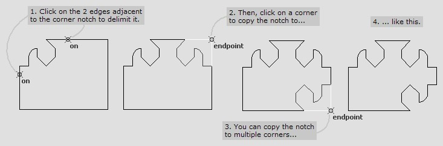
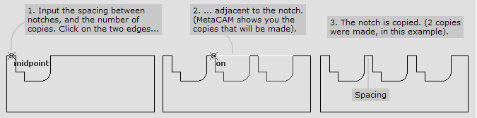
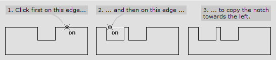
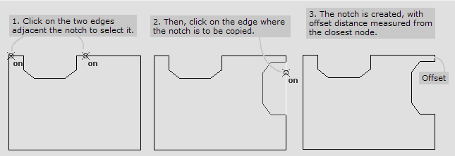
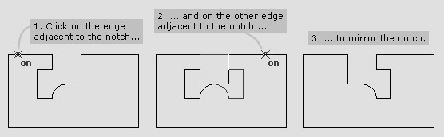
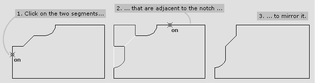
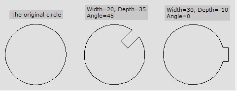
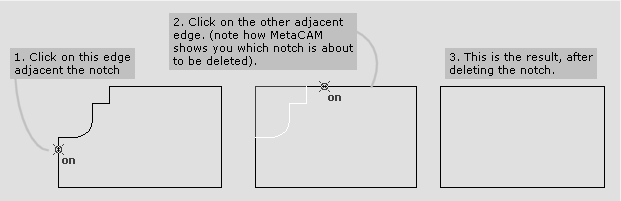
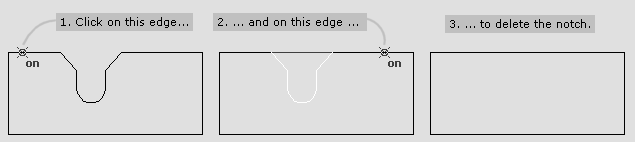

Notches
Copy Corner Notch
Copy Corner Notch
You can copy a corner notch to another corner using this tool. The notch is first selected by clicking the two adjacent segments. Then, you can copy it to any other corner by simply moving the pointer over that corner and clicking.

When the pointer is moved over a corner where the notch can be copied, displays the copied shape of the notch to confirm.
Copy Edge Notch
Copy Edge Notch
You can make multiple copies of a notch along an edge, using this tool. First, input the spacing between the copies, and the number of copies of the notch you want to make. Then, select the notch by clicking on the two line segments that are adjacent to the notch.

The notch is copied along the direction from the first click to the second click. For example:

The spacing is the gap between two adjacent notches, measured at the mouth. If there is not enough space along the edge to make all the copies, will not copy the notch.
Copy Notch to Another Edge
Copy Notch to Another Edge
You can copy a notch from one edge to another using this tool. First, select the notch by clicking on its two adjacent edges. Then, click on the edge the notch is to be copied to. The input parameter Offset is used to position the edge notch. (Offset is measured form the closest node on the target edge).

If the target edge is too short to contain the notch, the notch is not copied.
Mirror Notch
Mirror Notch
You can mirror a notch at a corner, or along a line segment, using this tool. Click on the two line segments that are adjacent to the notch, and the notch is mirrored. Here is an example that shows how to mirror a notch along an edge. The notch is mirrored about an imaginary line passing through the midpoint of the mouth of the notch, and perpendicular to the edge.

This example shows how to mirror a corner notch. The notch is mirrored about an imaginary line passing through the corner and bisecting the angle at the corner.

Keyslot
Keyslot
This tool is used to make key slots in circles or arcs. Using positive depths creates key slots; using negative depths can create keys. The Angle parameter used to position the key or key slot along the arc. This is the angle of the line connecting the centre of the arc to the centre of the key slot.

Delete Notch
Delete Notch
You can delete a notch at a corner, or along a line segment, using this tool. Click on the two line segments that are adjacent to the notch, and the notch is removed. Here is an example that shows how to delete a corner notch:

This example shows how to delete an edge notch:

Copy Notch on Arc
Copy Notch on Arc